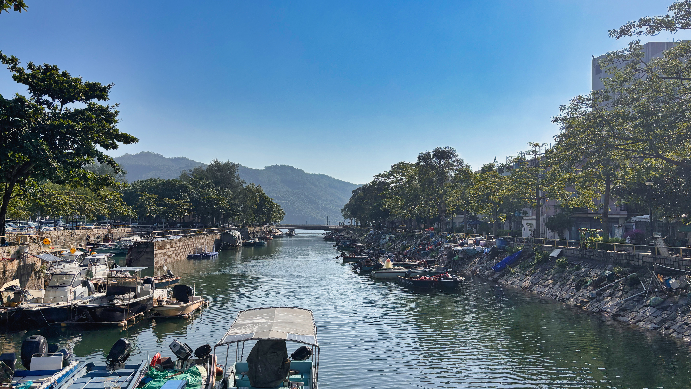

銀礦灣泳灘银矿湾泳滩
水清沙幼，設有觀景平台、燒烤場及小食亭；每年龍舟競渡嘅最佳觀賞點。水清沙幼，设有观景平台、烧烤场及小吃亭；每年龙舟竞渡的最佳观赏点。
面向東面大海，朝早可以睇到海上日出；黃昏太陽會落到山後，呢度睇唔到日落。面向东面大海，早上可以看到海上日出；黄昏太阳会落到山后，这里看不到日落。
水清沙幼嘅銀礦灣、逾四百年嘅文武廟、田園攝影體驗同離島小店——由中環搭船約 35 分鐘，走進香港難得嘅慢攝小鎮。帶埋相機，由朝影到晚。水清沙幼的银矿湾、逾四百年的文武庙、田园摄影体验和离岛小店——由中环坐船约 35 分钟，走进香港难得的慢摄小镇。带完相机，从早拍到晚。
以下景點大部分步行可達，踩單車遊覽亦係梅窩嘅招牌玩法。建議預留半日至一日，慢慢行先有味道。以下景点大部分步行可达，踩单车游览亦是梅窝的招牌玩法。建议预留半天才一日，慢漫步才有味道。
水清沙幼，設有觀景平台、燒烤場及小食亭；每年龍舟競渡嘅最佳觀賞點。水清沙幼，设有观景平台、烧烤场及小吃亭；每年龙舟竞渡的最佳观赏点。
面向東面大海，朝早可以睇到海上日出；黃昏太陽會落到山後，呢度睇唔到日落。面向东面大海，早上可以看到海上日出；黄昏太阳会落到山后，这里看不到日落。分上下兩級瀑布，雨季水勢磅礡，旁邊有中式涼亭可以慢慢欣賞。分上下两级瀑布，雨季水势磅礴，旁边有中式凉亭可以慢慢欣赏。
由村口步行約 20 分鐘，路況輕鬆。由村口步行约 20 分钟，路况轻松。昔日村民為防禦土匪、海盜而建嘅守衛更樓，屹立村口，見證梅窩採銀時期嘅村落防禦歷史，係靜謐嘅打卡位。昔日村民为防御土匪、海盗而建的守卫更楼，屹立村口，见证梅窝采银时期的村落防御历史，是静谧的打卡位。
位處鹿地塘村，順路行入村內可一探老村屋。位处鹿地塘村，顺路走进村内可一探老村屋。逾百年歷史嘅人工開鑿礦洞，1862 年發現鉛礦並開採，1896 年停產，留下洞穴遺蹟。逾百年历史的人工开凿矿洞，1862 年发现铅矿并开采，1896 年停产，留下洞穴遗迹。
洞口已封閉，只可在外圍打卡影相。洞口已封闭，只可在外围打卡拍照。供奉北帝（玄天上帝）嘅古老廟宇，庇佑水陸平安，係當地村民世代信仰所在；廟內保留傳統建築格局，古樸寧靜。供奉北帝（玄天上帝）的古老庙宇，庇佑水陆平安，是当地村民世代信仰所在；庙内保留传统建筑格局，古朴宁静。
位處大地塘村，入內記得保持安靜。位处大地塘村，入内记得保持安静。海邊古廟，昔日漁民出海前嘅心靈寄託，廟前風光開揚。海边古庙，昔日渔民出海前的心灵寄托，庙前风光开扬。
可與文武廟一併走訪，感受漁村信仰。可与文武庙一并走访，感受渔村信仰。供奉文帝（文昌帝君）、武帝（關聖帝君）嘅文武廟，見證梅窩採銀時期嘅村落信仰；廟前牌坊係經典打卡位。供奉文帝（文昌帝君）、武帝（关圣帝君）的文武庙，见证梅窝采银时期的村落信仰；庙前牌坊是经典打卡位。
順路行入村內，仲有老村屋同水牛出沒。顺路走进村内，还有老村屋和水牛出没。沿海步道景觀開揚，望住船隻同綠山，係散步同影相嘅好地方。沿海步道景观开扬，望着船只和绿山，是散步和拍照的好地方。
碼頭附近有單車租借，可以租車環島。码头附近有单车租借，可以租车环岛。
梅窩係影友聚腳交流嘅好地方——傾心得、交流靈感、分享得意相片，一齊影、一齊進步，慢慢就會交到一班志同道合嘅影友，以影會友、聯繫友誼。梅窝是影友聚脚交流的好地方——倾心得、交流灵感、分享得意相片，一齐影、一齐进步，慢慢交到一班志同道合的影友，以影会友、联系友谊。
有興趣可以 WhatsApp 聯絡我，一齊攝影交流，以影會友，不論新手定資深攝影愛好者都歡迎！有兴趣可以 WhatsApp 联系我，一起摄影交流，以影会友，不论新手还是资深摄影爱好者都欢迎！
淨係梅窩，唔轉其他島！陪客人遊島 + 影相，節奏鬆動唔趕，平衡打卡同感受島嶼風情，適合單人、情侶或者細小組合。只在梅窝，不去其他岛！陪客人游岛 + 拍照，节奏松弛不赶，平衡打卡与感受岛屿风情，适合单人、情侣或小型组合。
歡迎預約查詢：WhatsApp 852-9205 1136欢迎预约查询：WhatsApp 852-9205 1136
所有相片均為相機原檔直出，唔會做磨皮、液化、瘦面等後製修飾，保留最真實自然嘅你同當下嘅光線氛圍。所有照片均为相机原图直出，不会做磨皮、液化、瘦脸等后期修饰，保留最真实自然的你与当下的光线氛围。
行程完結後即場整理，當日內（通常 2–4 小時內）透過讀卡器交收，蘋果手機隔空傳送，返到屋企就已經睇得。行程结束后即场整理，当日内（通常 2–4 小时内）透过读卡器交付，苹果手机隔空传送，回到家就已经看得。
預約時需先付訂金以留位，餘額於當日完結後找清。除惡劣天氣（如八號風球、黑色暴雨警告生效）活動取消外，訂金將按原支付方式退回；個人臨時取消恕不退還，敬請見諒。预约时需先付定金以留位，余额于当日结束后付清。除恶劣天气（如八号风球、黑色暴雨警告生效）活动取消外，定金将按原支付方式退还；个人临时取消恕不退还，敬请见谅。
※ 交付原則為「快、真、齊」；除惡劣天氣外，訂金一經確認不作退還。如當日需要現場挑選或即印相片，請預約時一併說明。※ 交付原则为「快、真、齐」；除恶劣天气外，定金一经确认不作退还。如当日需要现场挑选或即印照片，请预约时一并说明。
一家人喺梅窩慢落嚟，由熟悉離島嘅攝影師帶路，去海灘、農莊、樹蔭同老村屋——捉低小朋友同大自然、同家人互動嘅真實瞬間，唔使趕景點，留足時間畀你哋玩、影、笑。一家人在梅窝慢下来，由熟悉离岛的摄影师带路，去海滩、农庄、树荫和老村屋——捕捉小朋友同大自然、同家人互动的真实瞬间，唔使赶景点，留足时间畀你们玩、影、笑。
適合週末一家人慢遊：銀礦灣沙灘堆沙、捉小蟹，農莊餵動物、採果，老村屋前一家人合影——全部自然互動，唔擺 pose、唔催場。适合周末一家人慢游：银矿湾沙滩堆沙、捉小蟹，农庄喂动物、采果，老村屋前一家人合影——全部自然互动，不摆 pose、不催场。
專門捕捉小朋友最自在嘅狀態📸
完全唔擺拍，唔會安排任何道具或者強迫小朋友做動作。
全部相都唔修圖，原片直出，影到幾多張就一次過俾返你。
淨係捉低一家人玩、笑、擁抱、望住大海嘅真實瞬間，唔加任何包裝。专门捕捉小朋友最自在的状态📸
完全不摆拍，不会安排任何道具或者强迫小朋友做动作。
全部照片都不修图，原片直出，拍到多少张就一次性给你。
只捕捉一家人玩、笑、拥抱、望着大海的真实瞬间，不加任何包装。
歡迎一家大小預約，沙灘、農莊、村屋都得，睇下小朋友邊度最放鬆😌欢迎一家大小预约，沙滩、农庄、村屋都可以，看小朋友在哪里最放松😌
鍾意貓又鍾意狗？由熟悉梅窩嘅攝影師帶路，去村口、碼頭、海灘同山徑，同定居村貓、海邊狗互動影相——唔使追景點，留足時間畀你同毛孩玩到、影到。爱猫又爱狗？由熟悉梅窝的摄影师带路，去村口、码头、海滩和山径，同定居村猫、海边狗互动拍照——唔使追景点，留足时间畀你和毛孩玩到、影到。
專門影貓狗嘅自然狀態📸
完全唔擺拍，唔會擺任何裝飾同道具，亦都唔會引導、強迫毛孩做動作。
全部相都唔修圖，原片直出，影到幾多張就一次過俾返你。
淨係捕捉毛孩最自在、最真實嘅瞬間，唔加任何包裝。专门拍猫狗的自然状态📸
完全不摆拍，不会摆任何装饰和道具，也不会引导、强迫毛孩做动作。
全部照片都不修图，原片直出，拍到多少张就一次性给你。
只捕捉毛孩最自在、最真实的瞬间，不加任何包装。
歡迎帶貓狗預約，屋企或者戶外都得，睇下毛孩邊度最放鬆😌欢迎带猫狗预约，家里或者户外都可以，看毛孩在哪里最放松😌
搭船過坪洲、長洲，或者沿南大嶼山公路一直去——貝澳、塘福、長沙、水口、大澳，每個地方都係唔同嘅一日遊。坐船过坪洲、长洲，或者沿南大屿山公路一直去——贝澳、塘福、长沙、水口、大澳，每个地方都是不和的一日游。
細小而寧靜嘅離島，彩色小屋、舊火柴廠同灰窯遺址訴說工業史；行上手指山頂，可以 360° 望晒維港同南丫島。细小而宁静的离岛，彩色小屋、旧火柴厂和灰窑遗址诉说工业史；走上手指山顶，可以 360° 望晒维港和南丫岛。
梅窩碼頭搭橫水渡，約 15 分鐘梅窝码头搭横水渡，约 15 分钟香港最有人氣嘅離島——東灣泳灘玩水、張保仔洞探險、北帝廟睇太平清醮文化，仲有大魚蛋同芒果糯米糍等住你。香港最有人气的离岛——东湾泳滩玩水、张保仔洞探险、北帝庙看太平清醮文化，还有大鱼蛋和芒果糯米糍等着你。
中環有快船直達；梅窩橫水渡（班次疏）亦到中环有快船直达；梅窝横水渡（班次疏）亦到「東方威尼斯」——棚屋建喺水上，蝦醬蝦膏香飄街巷；行虎山觀景台望晒棚屋全景，運氣好仲可以見到中華白海豚。「东方威尼斯」——棚屋建在水上，虾酱虾膏香飘街巷；走虎山观景台望晒棚屋全景，运气好还可以见到中华白海豚。
巴士 1 號直達，約 45 分鐘巴士 1 号直达，约 45 分钟大嶼山南岸熱門露營地，水牛會喺沙灘同草地散步；沙灘長而闊，退潮時仲可以睇到潮池小生態。大屿山南岸热门露营地，水牛会在沙滩和草地散步；沙滩长而阔，退潮时还可以看到潮池小生态。
巴士 1／3M，約 15 分鐘巴士 1／3M，约 15 分钟大嶼山其中一條最長泳灘，沙幼水清；秋冬風起時，就係滑浪同風箏衝浪好手嘅樂園。大屿山其中一条最长泳滩，沙幼水清；秋冬风起时，就是滑浪和风筝冲浪好手的乐园。
巴士 1／3M，約 20 分鐘巴士 1／3M，约 20 分钟上長沙加下長沙全長約 3 公里，係全港最長沙灘；海邊有靚餐廳同營地，向南望住大海，睇日落一流。上长沙加下长沙全长约 3 公里，是全港最长沙滩；海边有靓餐厅和营地，向南望着大海，看日落一流。
巴士 1／3M，約 25 分鐘巴士 1／3M，约 25 分钟大嶼山南端嘅生態寶庫——水口灣泥灘係候鳥同海洋生物嘅棲息地，退潮可以行出灘觀察潮間帶；夜晚光害極低，係觀星熱點。大屿山南端的生态宝库——水口湾泥滩是候鸟和海洋生物的栖息地，退潮可以走出滩观察潮间带；夜晚光害极低，是观星热点。
巴士 1 號直達，約 35 分鐘巴士 1 号直达，约 35 分钟